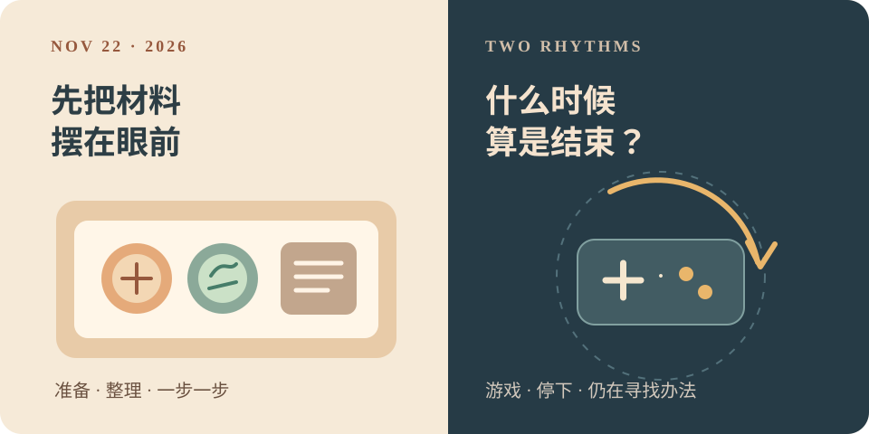
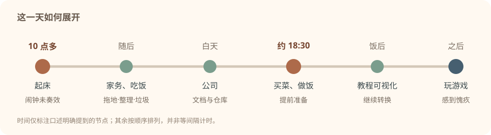
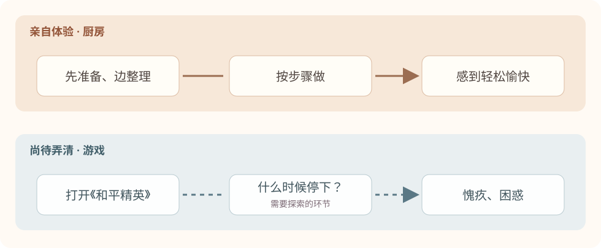

A DAY IN TWO RHYTHMS · 2026.11.22
厨房有准备，
夜晚如何收尾？
做饭时，我发现提前把东西准备好，事情就会变得轻松、愉快。但到了夜里，面对《和平精英》，我还是不知道怎样控制游戏时间。一天里的两种体验，让我开始重新想“开始之前要准备什么”。
从顺畅的厨房，到难以回答的夜晚
昨天晚上玩游戏玩得比较晚。今天十点多才起床，虽然定了闹钟，感觉还是没有用。傍晚，我却在厨房里获得了完全不同的体验：东西提前备好，边做边收拾，再一件件完成，整个人轻松了很多。

我已经体验过“提前准备”带来的轻松，却还在寻找“及时结束”这件事的办法。
01 · 起得晚，但一天并没有停在这里
十点多起床以后，我拖地、整理东西、丢垃圾，也吃了饭。随后去了公司，做了一些教程和其他文档的转换，并整理、优化了一个代码仓库。这里有进行过的工作，但口述没有交代具体完成数量，因此不把它包装成产出统计。
傍晚六点半左右买好菜，回家做了好几个菜。吃完之后，又继续把一些教程转换成可视化页面，最后玩了游戏。

02 · 厨房里的发现：先准备，后面就顺了
这次做的菜比较多，自己也觉得做得不错。但比结果更值得记住的，是我观察到的过程：提前把东西准备好，再边做边整理，后面就很顺。需要的东西已经在手边，顺着步骤一件件处理，不必临时手忙脚乱。
这是我今天亲身感受到的有效方法。它没有要求我突然变得更“自律”，只是让每一步更容易接上下一步。
先把事情摆好
提前准备食材、器具和需要处理的事情，让开始变得容易。
过程中不断整理
不必把所有收尾留到最后，按步骤推进也让心情更轻松。
03 · 游戏的难题，不只是“闹钟为什么没响作用”
饭后继续做完一些教程可视化，我又玩了《和平精英》。和游戏一起出现的，还有一种很强的愧疚感。我不太知道该怎么办。
前一晚因为玩得晚，第二天的早晨受到了影响；而今天夜里的游戏，口述没有说玩了多长时间、几点结束。不能因为再次玩了游戏，就断定今晚也一定晚睡。
我需要理解的也许不只是“为什么我忍不住玩”，还包括：到底是什么让我觉得愧疚？是睡眠被挤占、原本的安排被打乱，还是我希望自己把更多时间投入其他事情？这些目前都是问题，不是结论。

04 · 借用做饭的方法，试着给游戏安排一个“收尾”
下面是编辑性建议，而不是我今天已经实施的计划。 既然做饭中的“提前准备”和“按步骤处理”确实让我受益，可以先把它作为一个小实验，看看是否也能帮助我管理游戏结束的时刻。
实验不必追求一下子戒掉游戏。先把“什么时候结束”和“结束后做什么”变成具体步骤，再看看是否真有帮助。
- 开始前：试着约定一个明确条件，例如到某个时间或玩完几局就准备退出。
- 临近结束：在进入最后一局之前提醒自己，结束后直接退出，而不是临时再决定一次。
- 结束之后：简短记下实际的睡前安排、第二天起床的感受，以及愧疚是否变化。
先决定边界，再开始娱乐
用一个简单、能够辨认的结束条件代替模糊的“再玩一会儿”。这只是准备尝试的假设，还不知道是否奏效。
让最后一局真的成为最后一局
尽量在开局前做出决定，而不是等结束时再和自己谈判。把退出游戏当作一个具体动作。
观察感受，而不是只给自己打分
记录睡前和第二天的实际体验，看看游戏、睡眠和愧疚之间的关系；不以一次做不到就否定全部尝试。
05 · 留给明天的问题
今天没有找到解决游戏和愧疚的确定答案。但厨房里那种轻松的感觉提醒我：好的流程，也许不需要靠临时意志力硬撑，而可以从准备工作开始。
做饭已经让我看见了“先准备，再行动”的好处。至于夜里的游戏，我想保留这个问题：能不能为放松也设计一个温和、明确的结束方式？